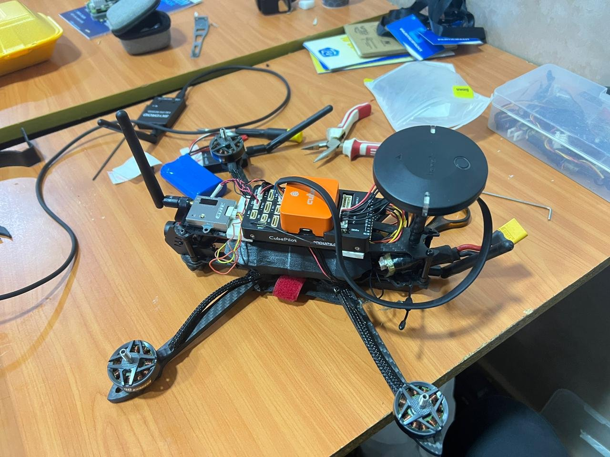

Air / UAV & UAS
Multirotor log analysis and filter tuning
Investigate unstable response and establish repeatable configuration checks.
Diagnostic and tuning milestones completed
Platform context from the supplied project collection; no performance metric is implied.
My contribution
Reviewed flight logs and sensors, prepared filter-setup recommendations, and supported FFT analysis, filter tuning, EKF corrections and PID-tuning work. Produced scenario reviews and follow-up parameter and test guidance.
Delivered work
A staged diagnostic and tuning engagement with log-analysis reports, sensor and filter checks, and recommended next test actions.
Scope and validation
Completed delivery and client acceptance are recorded. A later delivery note states that further work would continue; order completion is not treated as independent proof that every planned validation step was finished.